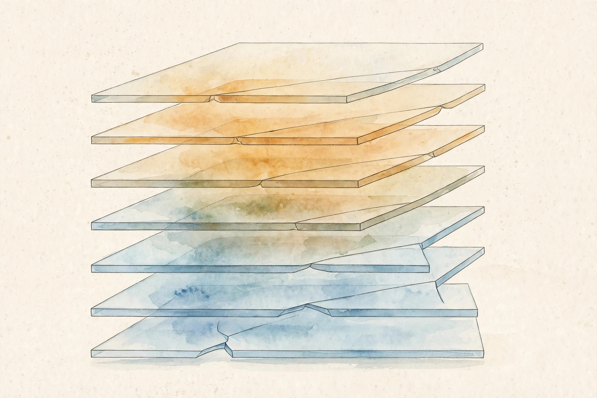

Companion · narrated from the lesson document
House prices cannot go negative. A line says they can. This companion walks the full arc of Unit 07: the ReLU kink, the module zoo, initialization, backpropagation as message passing, batch vectorization, gradient checks, and the failure catalog.
From the lesson The idea, and every number beside it, comes from the cited section of lesson-07-neural-nets-backprop.md. The phrasing is the companion's.
Illustration Invented by the companion: an analogy, a toy with made-up values, or a what-if. Never lecture content.
companion Companion voice: the idea above the tag is from the lesson. The generalization below it is the companion's.
Provenance: no lecture transcript exists for this unit, and no lecture video is named in the lesson. The lesson's Source mapping states that SRC-01 chapter 7 (PDF pages 81 to 114) was read in substantial part on 2026-10-06: sections 7.1 to 7.3 and 7.4.1 to 7.4.2 read, 7.4.3 to 7.4.4 only partially. Leaf rows carry SOURCE ATTRIBUTION PENDING until the RUN 6 pass, so the strict fact-vs-interpretation tagging here is the guardrail.

Section 1 · SL-01 · C01, C02
From the lessonSL-01 §Source anchor, §Mental model
House prices cannot go negative. A line says they can. What is the smallest change that fixes this? One neuron: ReLU(wᵀx + b) = max(wᵀx + b, 0). The kink at zero floors the price. Stack neurons: each hidden unit computes one derived feature. The output layer combines them. Depth composes simple kinks into complex curves.
From the lessonSL-01 §Objects
Two-layer net: zⱼ = wⱼ⁽¹⁾ᵀx + bⱼ⁽¹⁾, aⱼ = ReLU(zⱼ), output = w⁽²⁾ᵀa + b⁽²⁾. x in R^d, m hidden units, wⱼ⁽¹⁾ in R^d, w⁽²⁾ in R^m. Vectorized: Z⁽¹⁾ = W⁽¹⁾x + b⁽¹⁾, A⁽¹⁾ = ReLU(Z⁽¹⁾), with W⁽¹⁾ in R^(m×d).
| ReLU neuron: w = 0.3, b = −400 | x = 2000 sqft | x = 1000 sqft |
|---|---|---|
| Score: 0.3x − 400 | 200 | −100 |
| ReLU(score) | 200 (thousand) | 0, floored |
From the lessonSL-01 §Why the nonlinearity is load-bearing
Stack two linear layers: W⁽²⁾(W⁽¹⁾x) = (W⁽²⁾W⁽¹⁾)x. Still linear. Without activation, depth adds nothing. The activation is what makes depth matter.
Without activation, depth adds nothing. Two linear layers collapse to one.
Section 2 · SL-02 · C03, C08, C10
From the lessonSL-02 §Source anchor, §The module list
Linear: z = Wx + b, the workhorse. ReLU: max(z, 0), gradient through where z > 0, else zero. Sigmoid and tanh: squashing activations with g(1 − g) backward. Gradients vanish at saturation. Softmax: vector to distribution (U03). Conv1D: zᵢ = Σⱼ wⱼx_{i+j}, shared weights, O(km) time, k parameters against m² for dense.
From the lessonSL-02 §The module list
LayerNorm: z → (z − mean)/std, then scale and shift by learnable γ, β. Key property (notes 7.45): LN(αWx) = LN(Wx) for α > 0. Scaling the weights does not change the output. This stabilizes training. RMSNorm: like LayerNorm without mean-centering, used in LLaMA and Qwen (notes 7.51). BatchNorm normalizes over the batch, not the features: different statistics, different train and test behavior.
| LayerNorm on z = [1, 2, 3] | Value |
|---|---|
| Mean, std | 2, 0.8165 |
| Normalized | [−1.2247, 0, 1.2247] |
| Scale by α = 5 first: [5, 10, 15] | mean 10, std 4.0825 |
| Normalized after scaling | [−1.2247, 0, 1.2247], identical |
Illustration The norm probe. Type a vector and a scale α. The toy normalizes z and αz and compares. The lesson's invariance appears as two identical outputs.
z: α:
From the lessonSL-02 §Failure case
Forgetting the model is in train versus eval mode for BatchNorm: test uses stale batch statistics and predictions shift. LayerNorm has no such mode split, one reason language models prefer it.
LN(αWx) = LN(Wx). Scaling the weights changes nothing downstream. The normalization absorbs it.
Section 3 · SL-03 · C09
From the lessonSL-03 §Source anchor, §Mental model
All weights start at zero. What happens? Every hidden unit computes the same thing, gets the same gradient, and stays identical forever. Symmetry never breaks. Random init breaks it. Scale matters too. Too large, activations explode. Too small, they vanish. Xavier and Kaiming set the variance so the signal keeps its scale across layers: Var(W) = 1/fan_in (Xavier) or 2/fan_in (Kaiming for ReLU).
| 1000×1000 matrix, entries N(0, 1), x unit variance | Value |
|---|---|
| Var(zᵢ) | 1000 × 1 × 1 = 1000 |
| Explosion per layer | √1000 ≈ 31.6 |
| With Xavier scaling 1/√1000 | Var preserved at 1 |
Illustration The variance machine. Set fan_in. The toy shows the activation variance after one layer under N(0, 1) init and under Xavier scaling, then compounds it over your chosen depth.
fan_in: layers:
After init, activation variance across a batch should be O(1) at every layer. Measure it.
From the lessonSL-03 §Failure case
Zero init on a 3-layer net: the network trains as a linear model no matter the depth. Silent and common in hand-rolled code.
Zero init never breaks symmetry. Every hidden unit learns the same thing forever, and depth is wasted.
Section 4 · SL-04 · C04, C05, C06
From the lessonSL-04 §Source anchor, §Mental model
The loss depends on 1e6 parameters through 50 layers. How do we get all 1e6 derivatives without 1e6 forward passes? Forward pass: compute and store every intermediate. Backward pass: start with dJ/dJ = 1 and walk backward. Each module answers one question: given dJ/d(output), what is dJ/d(input) and dJ/d(params)? The chain rule composes these answers. Cost: one forward plus one backward, O(N) total (notes Theorem 7.4.1).
From the lessonSL-04 §The backward contract
For u = g(z) with J scalar: dJ/dzᵢ = Σⱼ dJ/duⱼ · dgⱼ/dzᵢ. The map from dJ/du to dJ/dz is linear. The map itself depends on z. Each module implements this map using only local info: its input and the upstream gradient. Vectorized: dJ/dW⁽¹⁾ = (dJ/dZ⁽¹⁾) xᵀ, dJ/db⁽¹⁾ = dJ/dZ⁽¹⁾, dJ/dx = W⁽¹⁾ᵀ (dJ/dZ⁽¹⁾). If Z⁽¹⁾ is (m,), dJ/dZ is (m,), dJ/dW⁽¹⁾ is (m, d). Every backward equation must balance shapes.
| One ReLU neuron: x = [1, 2], w = [0.5, −0.5], b = 0.5, y = 1 | Forward | Backward |
|---|---|---|
| z = 0.5 − 1 + 0.5 | 0 | - |
| a = ReLU(z) | 0 | - |
| J = (1/2)(a − y)² | 0.5 | - |
| dJ/da = a − y | - | −1 |
| ReLU at z = 0: subgradient, take 0 | - | dJ/dz = −1 × 0 = 0 |
| dJ/dw, dJ/db | - | [0, 0], 0: dead neuron, nothing learns |
Illustration The neuron lab. The lesson's one-neuron circuit, generalized. Set x, w, b, y. The toy runs the full forward and backward pass and reports whether the neuron is dead or alive.
x: w: b: y:
Try b = 1.5, y = 3 to reproduce the lesson's live neuron: dJ/dw = [−2, −4].
From the lessonSL-04 §Failure case
Forgetting to store the forward intermediates: recomputing them wrong, for example with dropout on, gives wrong gradients. Frameworks cache them for this reason. Forward-mode autodiff is efficient for few inputs and many outputs. Reverse mode, backprop, wins for many parameters and one loss.
A dead neuron kills the gradient. z ≤ 0 means dJ/dz = 0, and nothing downstream of the kink learns.
Section 5 · SL-05 · C07
From the lessonSL-05 §Source anchor, §Mental model
Looping over 10,000 examples in Python takes seconds. The GPU sits idle. How do we feed it? Stack B examples into a matrix X of shape (B, d). Z = XWᵀ + b: one matrix multiply does B examples at once. The backward pass is the same story with batched outer products. Mini-batch SGD (notes Algorithm 2) averages B gradients per step: less noise than SGD, more parallelism than full batch.
| B = 32, d = 10, m = 20 | Shape |
|---|---|
| X | (32, 10) |
| W | (20, 10) |
| Z = X @ Wᵀ | (32, 20) |
| dJ/dZ | (32, 20) |
| dJ/dW = (dJ/dZ)ᵀ @ X | (20, 10) |
From the lessonSL-05 §Correctness checks, §Failure case
Batched loss equals the mean of per-example losses: test on B = 4 by hand. dJ/dW from the batch equals the mean of per-example dJ/dW: test this. The failure case: a broadcasting bug, X (B, d) times W (d, m) versus W (m, d). A silent wrong answer if B == m. Shape audits catch it.
Section 6 · SL-06 · C11
From the lessonSL-06 §Source anchor, §Mental model
You wrote backprop by hand. How do you know it is right? Finite differences: dJ/dθᵢ ≈ [J(θ + h·eᵢ) − J(θ − h·eᵢ)] / (2h). Slow, two forward passes per parameter, but independent of your backward code. Use it on a tiny net with few parameters, compare, then trust backprop at scale.
| J(w) = (1/2)(ReLU(2w) − 1)² at w = 1, h = 1e−5 | Value |
|---|---|
| J(1) | 0.5 |
| Analytic: dJ/dw = (2 − 1) × 2 | 2 |
| J(1 + h) | 0.50002 |
| J(1 − h) | 0.49998 |
| Finite difference | 0.00004 / 2e−5 = 2, match |
Illustration The check machine. The lesson's J(w) = (1/2)(ReLU(2w) − 1)². Move w. The toy compares the analytic derivative against the finite difference with your h.
w: 1.0 h:
Protocol from the lesson: check on a small net, relative error below 1e−5 for smooth modules. At the ReLU kink (w = 0), skip or expect mismatch.
From the lessonSL-06 §Protocol, §Failure case
The check passes before any training run with new backward code. Analytic and numeric agree to 1e−7 on linear modules. The failure case: gradient checking a 1e6-parameter net. Two million forward passes. Check small, scale with confidence. Do not check through dropout or other randomness.
The gradient check is the ultimate arbiter. Two implementations that agree were probably both right. One that disagrees is certainly wrong somewhere.
Section 7 · SL-07 · C12
From the lessonSL-07 §Source anchor, §The failure catalog
The loss flatlines at a bad value. What broke? Dead ReLUs: a large gradient pushes z below 0 for all data. The neuron never recovers, the gradient is zero there. Diagnose: fraction of zero activations near 1. Fix: lower LR, better init, LeakyReLU. Vanishing gradients: sigmoid and tanh stacks shrink gradients geometrically. Diagnose: gradient norms per layer decay to zero. Fix: ReLU, residuals, normalization. Exploding gradients: large weights compound. Diagnose: gradient norm spikes, loss NaN. Fix: gradient clipping, smaller init, normalization. Bad conditioning: ravines in the loss. Diagnose: slow zigzag progress. Fix: Adam, normalization. Saddle points: gradient zero, not a minimum. Flat regions slow progress.
From the lessonSL-07 §Correctness checks
Log gradient norms per layer per 100 steps. A healthy run keeps them within a few orders of magnitude. Activation histograms: not all-saturated, not all-dead.
Blaming the model for an optimizer failure: the architecture was fine, the learning rate was 10x too high. Always check the training curves first.
Section 8 · Synthesis
From the lessonSL-01 to SL-07
The arc, end to end. One kink floors the price at zero, and stacking kinks builds curves the line could never draw (SL-01). The modules each carry a forward rule and a backward contract: linear, ReLU, squashing activations, softmax, LayerNorm with its scaling invariance, convolution with shared weights (SL-02). Random init breaks the symmetry that zero init preserves, and Xavier and Kaiming set the scale so the signal survives depth (SL-03).
Backprop walks the stored intermediates backward from dJ/dJ = 1: one forward plus one backward buys all 1e6 derivatives in O(N) (SL-04). Batches stack into matrices so one multiply feeds the GPU, and mini-batch SGD averages B gradients per step (SL-05). The gradient check arbitrates every hand-written backward pass: finite differences on a tiny net, then trust at scale (SL-06). And when the loss flatlines, read the catalog: dead ReLUs, vanishing or exploding gradients, bad conditioning, saddle flats, and always the training curves before the architecture (SL-07).
From the lesson§Research reading, §Nearest alternatives
Where the unit points next, in the lesson's own forward links. Kernel methods (U05): fixed nonlinear features, convex training, no learned representation. Pretrained init (U13): start from a trained model instead of random. Forward-mode autodiff: efficient for few inputs and many outputs. Reverse mode wins for many parameters and one loss. Read SRC-01 chapter 7 in full, finishing 7.4.3 to 7.4.4. The extension: train depth {2, 10, 50} ReLU MLPs on a synthetic task and log per-layer gradient norms. The falsifiable claim: without normalization the 50-layer gradient norm ratio (first to last) exceeds 1e6, and with LayerNorm it stays under 1e2.
Wisdom index
Each nugget states the idea in plain words, why it matters, and the transferable principle. Every one is anchored to its lesson section.